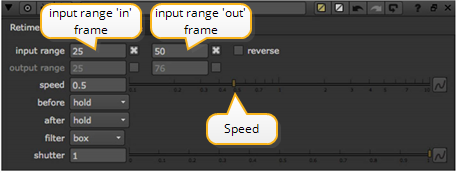

用导航打开主题
简单的重新计时
核武器
“重定时” 节点允许您更改剪辑中所有帧的播放时间或剪辑中的帧范围。您也可以使用它来反转剪辑播放。它通过删除或复制框架来做到这一点。有关更高质量的重新计时，请参见
OFlow 重新计时
.
重计时剪辑中的所有帧
|
|
1。
|
选择
时间
>
重定时
将重定时节点插入脚本。
|
|
|
2.
|
在中输入值
速度
参数。大于 1 的值会提高播放速度; 小于 1 的值会降低播放速度。
|
|
|
3.
|
检查
反向
框如果你想向后播放剪辑-使最后一帧成为第一帧，第一帧成为最后一帧，依此类推。
|
|
|
4.
|
增加
快门
启用帧混合的参数 (有关更多信息，请参见
插值
)。
|
对剪辑中的一系列帧重新计时
|
|
1。
|
选择
时间> 重定时
将重定时节点插入脚本。
|
|
|
2.
|
选中的框
输入范围
并输入 “in”
和 “出” 帧。
|

例如，如果您的原始剪辑是 50 帧，但您只想重新计时最后一半，您将输入
25
对于 in 点，离开 out 点
50
.
|
|
3.
|
选中该框
输出范围
并输入 “输入” 和 “输出” 帧，以重定时到特定的剪辑长度。
|
or
在中输入一个因子
速度
参数和
核武器
计算出
输出范围
给你的。大于 1 的值会提高播放速度; 小于 1 的值会降低播放速度。